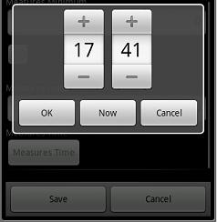

The Time domain is a DateTime(0.5) and behaves as the last (it's like a shortcut). In the Smart Devices applications you will have a special picker that lets your edit just the Time part of a DateTime (all the Datepart is hidden).  Notes:
|
| Backlinks | ||
| Calendar external object | DateTime picker for Smart Devices | Category:Domains with Special Semantics |
| The TimeZone problem | TimeZone Support - General Considerations |